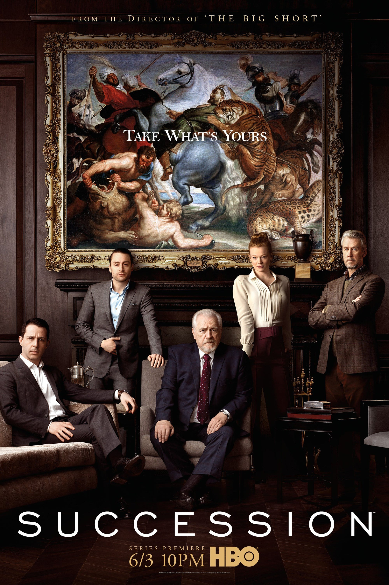
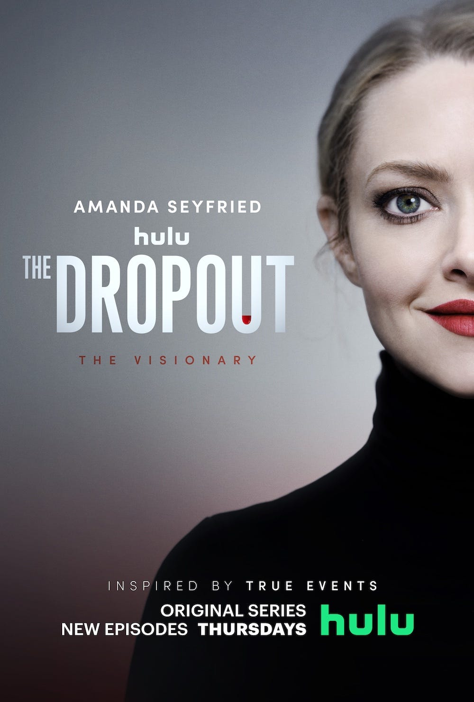

Girlboss
Girlboss est une série télévisée américaine en 13 épisodes de 26-31 minutes créée par Kay Cannon et diffusée le 21 avril 2017 sur Netflix.
The Playlist
The Playlist est une série télévisée américaine en 13 épisodes de 26-31 minutes créée par Kay Cannon et diffusée le 21 avril 2017 sur Netflix.

Succession
Succession est une série télévisée américaine en 13 épisodes de 26-31 minutes créée par Kay Cannon et diffusée le 21 avril 2017 sur Netflix.

The Dropout
The Dropout est une série télévisée américaine en 13 épisodes de 26-31 minutes créée par Kay Cannon et diffusée le 21 avril 2017 sur Netflix.